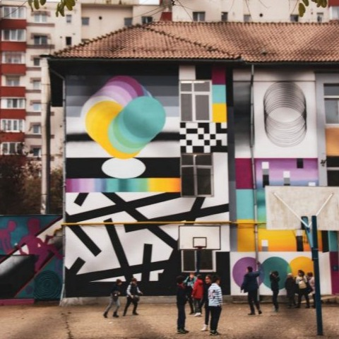
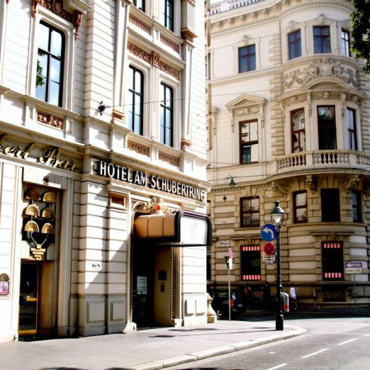

Alte scrieri
Descoperă câteva din proiectele mele din cadrul UBB Radio

2019
Fotoreportaj
GRAFFITI: FORMĂ DE EXPRIMARE SAU VANDALISM?

2019
Podcast
MOLDOVEANUL CU PĂLĂRIE

2019
Reportaj
5 ZILE CU MAȘINA PRIN EUROPA DIN CHIȘINĂU PÂNĂ ÎN FARO, PORTUGALIA